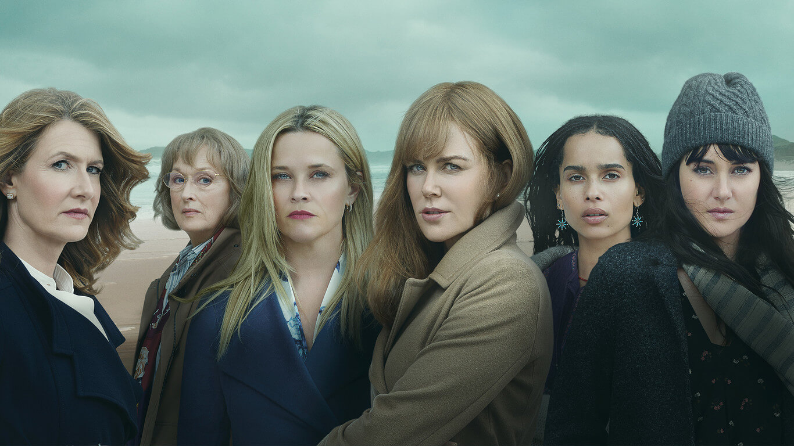

Temporada 1
Junto al anuncio inicial del desarrollo de la producción, se informó que Kidman y Witherspoon también protagonizarían la serie. En diciembre de 2015, anunció que Shailene Woodley, Adam Scott, Laura Dern, y Zoë Kravitz se habían unido al elenco en los papeles principales. El 5 de enero de 2016, se anunció que Alexander Skarsgard y James Tupper se había unido al elenco principal y que Jeffrey Nordling, Santiago Cabrera, PJ Byrne, Kelen Coleman, Sarah Burns, Darby Camp, Cameron y Nicholas Crovetti, Ivy George, Chloe Coleman, Virginia Kull, Sarah Baker, Kathreen Khavari, Larry Bates, Hong Chau, y Gia Carides se había unido al elenco de apoyo. Unos días más tarde, se informó que Iain Armitage se había unido al reparto en el papel del hijo del personaje de Woodley Poco después de eso, se informó que Merrin Dungey, Larry Sullivan y David Monahan también se habían unido al elenco.